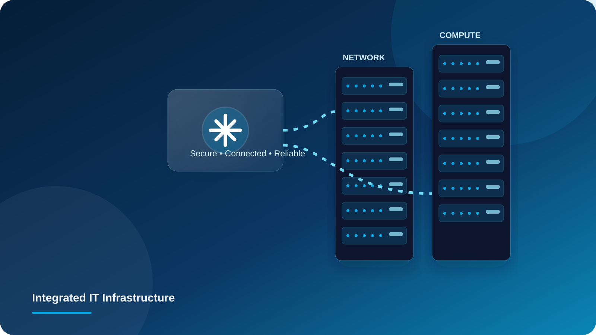

Infrastructure
that keeps
business
moving.
We provide comprehensive end-to-end IT infrastructure solutions designed to keep your business connected, secure, reliable, and ready for growth.

Complete IT Solutions. Stronger Business Every Day.
From planning and deployment to monitoring, maintenance, and ongoing support, we manage your IT environment through a single trusted partner.
Our Services
Comprehensive IT solutions to power your business.

Structural Cabling
Professional cabling design, installation and deployment including CAT5/CAT6, fiber optics, racks, cabinets, raised flooring, patching, revamping and …

Networking Solutions
End-to-end Active & Passive Networking solutions including Switching, Routing, Wi-Fi, Firewalls, Structured Cabling, Fiber Optics, Racks and Network A…

Data Center Solutions
Complete data center solutions including Design & Build, UPS & Power Distribution Racks & Accessories, and Cooling Systems for maximum uptime and effi…

Security Solutions
Comprehensive security solutions including Next-Generation Firewalls to protect your network, applications and data from evolving cyber threats.

Enterprise Computing
Scalable enterprise infrastructure including Servers, Storage and Virtualization solutions to handle critical workloads and drive business growth.

End User Computing
Wide range of Desktops, Laptops, Workstations and IT Accessories designed to enhance productivity, performance and user experience.

CCTV & Surveillance
End-to-end IP CCTV and surveillance solutions with cameras, connectivity, video management software and video storage for complete visibility and real…
Cloud Infrastructure
From cloud adoption and migration to ongoing infrastructure management, ALTEKNETWORKS IT SERVICES designs and delivers secure, scalable and reliable c…
Annual Maintenance Contracts (AMC)
Comprehensive AMC support for Desktops, Laptops, Servers, Network Devices, Firewalls and other IT equipment. Our proactive maintenance and technical s…
Infrastructure that supports
your business operations.
Deliver quality with integrity. Ensure security and reliability. Drive innovation and excellence. Build long-term partnerships. Empower business success.
Start a conversation →